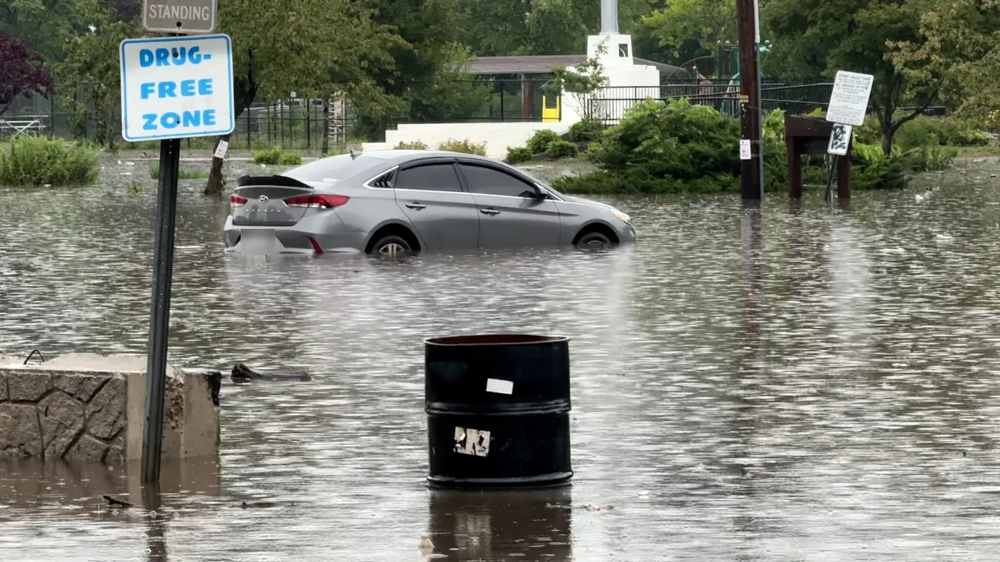

04 / Memorial Park flooding
What would it take to get state funding for Memorial Park’s flooding?
Memorial Park, along Pascack Brook, flooded badly four times between 2020 and 2023. In spring 2026 the Village wanted to apply for a state grant to address it, but it was running a deficit, and the application seemed to require a new engineering study it couldn’t easily pay for. I spent the next few months working out what the grant actually required.
- My role
- Led the investigation: records requests, agency follow-up, grant scoping, and coordination
- Worked with
- Engineers, NYS DEC, the Rockland County Drainage Agency, and grant consultants
- When
- March–June 2026
- Methods
- Records requests (FOIL) · Document review · Eligibility analysis · Agency coordination · Stakeholder mapping
- Outcome
- Grant eligibility confirmed for a narrower project; County support letter for site control
- Not yet
- A grant award, construction, or any measured drop in flooding
01 Context
A known problem with several owners
Nobody disputed that the park floods. Rockland County’s 2024 hazard mitigation plan lists Memorial Park among the Village’s flood-prone areas and records major flooding there during Tropical Storm Isaias (August 2020), Hurricane Henri (August 2021), the remnants of Hurricane Ida (September 2021), and a severe storm in July 2023. Village-wide, the same plan counts 254 flood insurance claims and about $1.47 million paid, in a village where 24.2% of residents live below the poverty line.
What was unclear was who could act. The Village owns the park. The Rockland County Drainage Agency controls the waterway. The County holds the hazard plan and the earlier flood studies. The state Department of Environmental Conservation (DEC) decides what counts as a qualifying study for the grant. I expected the engineering to be the hard part. It turned out to be working out which of these institutions could answer which question, and getting the answers in writing.
Exhibit 01 · Memorial Park, 2026
The problem, on the ground


02 Approach
Reading what had already been paid for
Before anyone spent money or assigned blame, I wanted to know what had already been studied, who controlled the affected stretch of the brook, and what commitments were on paper. I filed two Freedom of Information Law requests, one to the County and one to the Drainage Agency, for engineering records, consultant work, and the basis and status of a possible historical contribution from the Village. Parts of the County’s hazard plan, including its critical-facility and dam appendices, were redacted or hard to get in the public version.
The most useful document was a 2025 Phase 2 flood analysis that Colliers prepared for the County. It modeled Memorial Park in 2-year and 100-year storms, compared ways of reducing the flooding (enlarging the railroad culvert, lowering or removing two downstream weirs, removing sediment and regrading the channel), and estimated their costs. The flooding was well documented. What the files didn’t settle was whether any existing study would count for the grant.
Not a park problem
Reading the analysis closely changed what kind of project this was. The flooding traced back to how Pascack Brook moves through the area: a restriction near the MTA railroad crossing, two weirs downstream, and sediment in the channel. Among the alternatives I reviewed, lowering or removing the weirs produced the largest modeled drop in water level at the park. Memorial Park was where the benefit would land, not the thing that needed fixing, and that decided which funding programs could fit.
03 Decisions
Choosing the funding route
My first strategy memo, on April 8, followed the engineering toward clean-water infrastructure financing for the brook work, with park and downtown improvements held back as a second phase. By May 11 I had moved the lead route to the state’s Resilient Watersheds Grant, which funds the stream, floodplain, and weir work the analysis pointed to. I kept a Department of State flood-resilience program as a possible parallel application and set the green-infrastructure grants aside for any separate stormwater project, because the core problem wasn’t one they were built for. The open question was which study could qualify the project.
The funding routes I compared
| Route | Best use | Main concern | My recommendation |
|---|---|---|---|
| Resilient Watersheds Grant (DEC) | Core brook and floodplain flood mitigation | Needs a Resilient NY or DEC-approved comparable study | Lead route |
| Department of State flood-resilience program | Parallel flood-resilience funding in the same application round | Its own rules; can’t fund the same work twice | Select if available |
| Green Resiliency Grant | Separate stormwater storage project | Needs defined drainage areas and storage sizing | Only for a separate package |
| Green Innovation Grant Program | Bioswales, porous pavement, tree trenches | Too narrow for a weir and channel problem | Secondary only |
From my May 11, 2026 funding strategy summary. The April 8 memo had led with Clean Water State Revolving Fund and Water Infrastructure Improvement Act financing.
Narrowing the project to fit the grant
DEC flagged gaps in the site-specific study’s future-flow analysis, and some of the interventions it proposed fell outside what the Resilient Watersheds Grant would fund. I wrote to DEC proposing a narrower project: removing a weir or related structures, with directly related stream restoration. DEC confirmed that the Hackensack River Resilient NY report could serve as the qualifying study for that scope, with the Pascack Brook material as a supplement.
The June 5 deadline
For a couple of days, the team was working from a different assumption. On May 26, the understanding was that the Village needed a DEC-approved comparable flood study by June 5, including the hydraulic modeling and future-flow analysis the County’s report lacked. The engineers said that work could be done, but not by June 5. On May 27, Village staff agreed the date wasn’t realistic and asked leadership for direction.
The engineers and the grant consultant were each right, about different questions. The engineers were answering whether a new study could be finished in time. The consultant pointed out that the grant called for an existing report, and referred us to DEC’s list of completed Resilient NY studies. I circulated DEC’s written guidance and explained that a limited support memo could strengthen the application without a new study. The consultant then confirmed that June 5 wasn’t a required deadline for the pathway we had chosen.
Getting permission to work on County land
Qualifying for the grant didn’t give the Village the right to build on land the County controls. This part needed care. The Village was asking for the County’s cooperation while it was still untangling financial obligations from earlier administrations, and the work touched County-controlled stream areas and rail infrastructure. I was careful not to make claims the documents didn’t yet support.
I pushed for written support from the Drainage Agency, and the team obtained a letter backing the application’s site control. The consultant noted that easements and long-term site-control terms could still be required. For the engineering handoff, I specified the six inputs we would need: cost estimates, schedule, permits, mapping, maintenance, and construction assumptions.
Exhibit 02
How the funding pathway narrowed, spring 2026
- SpringStarting assumption: the grant needs a new engineering studyA cost the Village, running a deficit, couldn’t easily cover.
- Records requestsFound the January 2025 Pascack Brook Phase 2 analysisFlooding already modeled, with alternatives and costs.
- April 8 · strategy memoReframed as a brook-system flood projectRailroad crossing, two weirs, and sediment, not park drainage. Funding led with infrastructure financing.
- May 11 · funding summaryResilient Watersheds Grant becomes the lead routeIt funds weir, stream, and floodplain work. I asked DEC whether an existing regional report could qualify the project.
- DEC replyThe Hackensack River Resilient NY report can qualify a narrower scopeWeir removal and related stream restoration, with the Pascack Brook study as a supplement.
- May 26–27A June 5 study deadline turned out not to applyI circulated DEC’s written guidance; the consultant confirmed it.
- JuneCounty Drainage Agency letter supporting site controlEasements and long-term terms may still be required.
- DoneEligible to apply, no new study
- Not yetGrant awarded
- Not yetBuilt
- Not yetFlooding measurably reduced
04 Outcome
Where it stands
The Village can apply for funding without paying for a new qualifying study, and it has the County support it needs at the application stage. That removed a costly obstacle for a village in deficit. It isn’t a grant award, nothing has been built, and there’s no reduction in flooding to report. Easements, long-term site control, and construction are still separate steps.